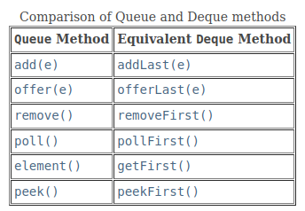

1. Stack
Overview
- A stack is a data structure with the property that only the top element of the stack is accessible. In a stack, the top element is the data value that was most recently stored in the stack.
- Sometimes this storage policy is known as last-in, first-out, or LIFO.
Stack ADT
| Modifier and Type | Method | Description |
|---|---|---|
| boolean | empty() | Tests if this stack is empty. |
| E | peek() | Looks at the object at the top of this stack without removing it from the stack. |
| E | pop() | Removes the object at the top of this stack and returns that object as the value of this function. |
| E | push(E item) | Pushes an item onto the top of this stack. |
Class java.util.Stack<E>
- The
java.util.Stackclass is part of the original Java API but is not recommended for new applications. Instead, the Java designers recommend that we use thejava.util.Dequeinterface and thejava.util.ArrayDequeclass to provide the methods listed above. TheDequeinterface specifies the methods in our interfaceStackInt(see Table) and also those needed for a queue. We will discuss theDequeinterface and classArrayDequelater.
Our Interface Stack<E>
/**
* A collection of objects that are inserted and removed according to the last-in
* first-out principle. Although similar in purpose, this interface differs from
* java.util.Stack.
*/
public interface Stack<E> {
/**
* Returns the number of elements in the stack.
*
* @return number of elements in the stack
*/
int size();
/**
* Tests whether the stack is empty.
*
* @return true if the stack is empty, false otherwise
*/
boolean empty();
/**
* Inserts an element at the top of the stack.
*
* @param e the element to be inserted
*/
void push(E e);
/**
* Returns, but does not remove, the element at the top of the stack.
*
* @return top element in the stack (or null if empty)
*/
E top();
/**
* Removes and returns the top element from the stack.
*
* @return element removed (or null if empty)
*/
E pop();
}
Performance
| Operations | Big O (Worst-case Complexity) |
|---|---|
| empty() | O(1) |
| peek() | O(1) |
| pop() | O(1) |
| push(E item) | O(1) |
Implementation
- We are going to cover two ways of implementing a Stack:
Array (or ArrayList can also be adapted)LinkedList
Array-Based Stack Implementation
- The following class implements generic
Stack<E>interface.
Implementation
public class ArrayStack<E> implements Stack<E> {
public static final int INITIAL_CAPACITY = 10; // Default array capacity
private E[] data; // Generic array used for storage
private int top = -1; // Index of the top element in the stack
private int capacity;
public ArrayStack() {
this(INITIAL_CAPACITY); // Constructs stack with default capacity
}
public ArrayStack(int capacity) {
// Constructs stack with given capacity
this.capacity = capacity;
data = (E[]) new Object[capacity]; // Safe cast; compiler may give warning
}
public int size() {
return (top + 1);
}
public boolean empty() {
return (top == -1);
}
public void push(E e) throws IllegalStateException {
if (size() == data.length) {
reallocate();
}
data[++top] = e; // Increment t before storing the new item
}
public E top() {
if (empty()) return null;
return data[top];
}
public E pop() {
if (empty()) return null;
E answer = data[top];
data[top] = null; // Dereference to help garbage collection
top--;
return answer;
}
private void reallocate(){
capacity = 2 * capacity;
data = Arrays.copyOf(data, capacity);
}
}
**Drawbacks of Array-Based Implementation **
- Fixed-capacity array
- If the application needs much less space than the reserved capacity, memory is wasted.
- Performance of a stack realized by an array. The space usage is , where N is the size of the array, determined at the time the stack is instantiated, and independent from the number n N of elements that are actually in the stack.
- When the stack has reached the capacity, it will refuse storing a new element throwing IllegalStateException. This problem can be fixed by using
ArrayListas adapter instead of implementation from scratch usingArray.
Singly-Linked List-Based Stack
Implementation
import java.util.LinkedList;
public class LinkedStack<E> implements Stack<E> {
private LinkedList<E> list = new LinkedList<>(); // An empty list
public LinkedStack() { }
// New stack relies on the initially empty list
public int size() {
return list.size();
}
public boolean empty() {
return list.isEmpty();
}
public void push(E element) {
list.addFirst(element);
}
public E top() {
return list.getFirst();
}
public E pop() {
return list.removeFirst();
}
}
Extra
The Adapter Pattern
The adapter design pattern applies to any context where we effectively want to modify an existing class so that its methods match those of a related, but different, class or interface. One general way to apply the adapter pattern is to define a new class in such a way that it contains an instance of the existing class as a hidden field, and then to implement each method of the new class using methods of this hidden instance variable. By applying the adapter pattern in this way, we have created a new class that performs some of the same functions as an existing class, but repackaged in a more convenient way.
Comparisons of Stack Implementations
- As we discussed before, in array-based implementation If the application needs much less space than the reserved capacity, memory is wasted.
- Whereas a linked list based implementation has the advantage of using exactly as much storage as needed for the stack. However, also note that since a linked-list node stores 2 data field references for the previous and next node references and 1 data field for stored data element, a linked-list based implementation of the full size is 3 times more expensive in terms of memory than a full array-based stack.
2. Queue
Overview
- Another fundamental data structure is the queue. It is a close “cousin” of the stack, but a queue is a collection of objects that are inserted and removed according to the first-in, first-out (FIFO) principle.
Interface java.util.Queue<E>
| Modifier and Type | Method | Description |
|---|---|---|
boolean |
add(E e) |
Inserts the specified element into this queue if space is available, returning true upon success. Throws IllegalStateException if no space is available. |
boolean |
offer(E e) |
Inserts the specified element into this queue if space is available, returning true upon success. |
E |
element() |
Retrieves, but does not remove, the head of this queue. |
E |
peek() |
Retrieves, but does not remove, the head of this queue. Returns null if the queue is empty. |
E |
poll() |
Retrieves and removes the head of this queue. Returns null if the queue is empty. |
E |
remove() |
Retrieves and removes the head of this queue. Throws NoSuchElementException if the queue is empty. |

Implementation
Circular Array-Based Queue
package datastructures.queue;
import java.util.AbstractQueue;
import java.util.Iterator;
import java.util.NoSuchElementException;
import java.util.Queue;
/** Implements the Queue interface using a circular array. */
public class ArrayQueue<E> extends AbstractQueue<E> implements Queue<E> {
// Data Fields
/** Index of the front of the queue. */
private int front;
/** Index of the rear of the queue. */
private int rear;
/** Current size of the queue. */
private int size;
/** Current capacity of the queue. */
private int capacity;
/** Default capacity of the queue. */
private static final int DEFAULT_CAPACITY = 10;
/** Array to hold the data. */
private E[] data;
// Constructors
/** Construct a queue with the default initial capacity. */
public ArrayQueue() {
this(DEFAULT_CAPACITY);
}
@SuppressWarnings("unchecked")
/** Construct a queue with the specified initial capacity.
@param initCapacity The initial capacity
*/
public ArrayQueue(int initCapacity) {
capacity = initCapacity;
data = (E[]) new Object[capacity];
front = 0;
rear = capacity-1;
size = 0;
}
// Public Methods
/** Inserts an item at the rear of the queue.
@post item is added to the rear of the queue.
@param item The element to add
@return true (always successful)
*/
@Override
public boolean offer(E item) {
if (size == capacity) {
reallocate();
}
size++;
rear = (rear + 1) % capacity; data[rear] = item;
return true;
}
/** Returns the item at the front of the queue without removing it.
@return The item at the front of the queue if successful; return null if
the queue is empty
*/
@Override
public E peek() {
if (size == 0)
return null;
else
return data[front];
}
/** Removes the entry at the front of the queue and returns it if the queue is
not empty.
@post front references item that was second in the queue.
@return The item removed if successful or null if not
*/
@Override
public E poll() {
if (size == 0) {
return null;
}
E result = data[front];
front = (front + 1) % capacity;
size--;
return result;
}
@Override
public boolean add(E e) {
return offer(e);
}
@Override
public E element() {
return peek();
}
@Override
public E remove() {
return poll();
}
@Override
public Iterator<E> iterator() {
return new ArrayQueueIterator();
}
@Override
public int size() {
return size;
}
// Private Methods
/** Double the capacity and reallocate the data.
@pre The array is filled to capacity.
@post The capacity is doubled and the first half of the expanded array is
filled with data.
*/
@SuppressWarnings("unchecked")
private void reallocate() {
int newCapacity = 2 * capacity;
E[] newData = (E[]) new Object[newCapacity];
int j = front;
for (int i = 0; i < size; i++) {
newData[i] = data[j];
j = (j + 1) % capacity;
}
front = 0;
rear = size-1;
capacity = newCapacity;
data = newData;
}
/** Inner class to implement the Iterator<E> interface. */
private class ArrayQueueIterator implements Iterator<E> {
// Data Fields
// Index of next element
private int index;
// Count of elements accessed so far
private int count = 0;
// Methods
// Constructor
/** Initializes the Iter object to reference the first queue element. */
public ArrayQueueIterator() {
index = front;
}
/** Returns true if there are more elements in the queue to access. */
@Override
public boolean hasNext() {
return count < size;
}
/** Returns the next element in the queue.
@pre index references the next element to access.
@post index and count are incremented.
@return The element with subscript index
*/
@Override
public E next() {
if (!hasNext()) {
throw new NoSuchElementException();
}
E returnValue = data[index];
index = (index + 1) % capacity;
count++;
return returnValue;
}
/** Remove the item accessed by the Iter object – not implemented. */
@Override
public void remove() {
throw new UnsupportedOperationException();
}
}
}
Increasing Queue Capacity
- When the capacity is reached, we double the capacity and copy the array into the new one, as was done for the ArrayList. However, we can’t simply use the reallocate method we developed for the ArrayList because of the circular nature of the array. We can’t copy over elements from the original array to the first half of the expanded array, maintaining their position.
- We must first copy the elements from position front through the end of the original array to the beginning of the expanded array; then copy the elements from the beginning of the original array through rear to follow those in the expanded array.
Single-Linked List-Based Queue
package datastructures.queue;
import java.util.*;
/** Implements the Queue interface using a single‐linked list. */
public class ListQueue<E> extends AbstractQueue<E> implements Queue<E> {
/** A Node is the building block for a single‐linked list. */
private static class Node<E> {
// Data Fields
/** The reference to the data. */
private E data;
/** The reference to the next node. */
private Node<E> next;
// Constructors
/** Creates a new node with a null next field.
@param dataItem The data stored
*/
private Node(E dataItem) {
data = dataItem;
next = null;
}
/** Creates a new node that references another node.
@param dataItem The data stored
@param nodeRef The node referenced by new node
*/
private Node(E dataItem, Node<E> nodeRef) {
data = dataItem;
next = nodeRef;
}
}
// Data Fields
/** Reference to front of queue. */
private Node<E> front;
/** Reference to rear of queue. */
private Node<E> rear;
/** Size of queue. */
private int size;
// Insert inner class Node<E> for single‐linked list here.
// (See Listing 2.1.)
// Methods
/** Insert an item at the rear of the queue.
@post item is added to the rear of the queue.
@param item The element to add
@return true (always successful)
*/
@Override
public boolean offer(E item) {
// Check for empty queue.
if (front == null) {
rear = new Node<>(item);
front = rear;
} else {
// Allocate a new node at end, store item in it, and
// link it to old end of queue.
rear.next = new Node<>(item);
rear = rear.next;
}
size++;
return true;
}
/** Remove the entry at the front of the queue and return it
if the queue is not empty.
@post front references item that was second in the queue.
@return The item removed if successful, or null if not
*/
@Override
public E poll() {
E item = peek();
// Retrieve item at front.
if (item == null)
return null;
// Remove item at front.
front = front.next; size--;
return item;
// Return data at front of queue.
}
/** Return the item at the front of the queue without removing it.
@return The item at the front of the queue if successful;
return null if the queue is empty
*/
@Override
public E peek() {
if (size == 0)
return null;
else
return front.data;
}
@Override
public boolean add(E e) {
return offer(e);
}
@Override
public E element() {
return peek();
}
@Override
public E remove() {
return poll();
}
// Insert class Iter.
@Override
public Iterator<E> iterator() {
return null;
}
@Override
public int size() {
return size;
}
}
Double-Linked List-Based Queue
- Use
java.util.LinkedListclass as adapter class.
public class DoubleLinkedQueue<E> extends AbstractQueue<E> implements Queue<E> {
private LinkedList<E> list; // an empty list
public DoubleLinkedQueue( ) {
list = new LinkedList<>();
}
@Override
public boolean add(E e) {
return list.add(e); // Appends e to the end of the list
}
@Override
public boolean offer(E e) {
return list.add(e); // Appends e to the end of the list
}
@Override
public E remove() {
return list.remove(); // Removes the element in the beginning of the list
}
@Override
public E poll() {
return list.remove();
}
@Override
public E element() {
return list.getFirst();
}
@Override
public E peek() {
return list.getFirst();
}
@Override
public Iterator<E> iterator() {
return list.iterator();
}
@Override
public int size() {
return list.size();
}
}
Comparing the Three Implementations
- As mentioned earlier, all three implementations of the Queue interface are comparable in terms of computation time. All operations are O(1) regardless of the implementation. Although reallocating an array is an O(n) operation, it is amortized over n items, so the cost per item is O(1).
- In terms of storage requirements, both linked‐list implementations require more storage because of the extra space required for links. To perform an analysis of the storage requirements, you need to know that Java stores a reference to the data for a queue element in each node in addition to the links. Therefore, each node for a single‐linked list would store a total of two references (one for the data and one for the link), a node for a double‐linked list would store a total of three references, and a node for a circular array would store just one reference. Therefore, a double-linked list would require 1.5 times the storage required for a single‐linked list with the same number of elements. A circular array that is filled to capacity would require half the storage of a single‐linked list to store the same number of elements. However, if the array were just reallocated, half the array would be empty, so it would require the same storage as a single‐linked list.
3. Deque
Overview
- The name deque (pronounced "deck") is short for double‐ended queue, which means that it is a data structure that allows insertions and removals from both ends (front and rear).
Interface java.util.Deque<E>
Modifier and Type |
Method |
Description |
|---|---|---|
boolean |
add(E e) |
Inserts the specified element into the queue represented by this deque (at the tail) if space is available, throws IllegalStateException if no space is available. |
void |
addFirst(E e) |
Inserts the specified element at the front of this deque, throws IllegalStateException if no space is available. |
void |
addLast(E e) |
Inserts the specified element at the end of this deque, throws IllegalStateException if no space is available. |
boolean |
offer(E e) |
Inserts the specified element into the queue represented by this deque (at the tail) if space is available, returns true upon success, false if no space is available. |
boolean |
offerFirst(E e) |
Inserts the specified element at the front of this deque unless it would violate capacity restrictions. |
boolean |
offerLast(E e) |
Inserts the specified element at the end of this deque unless it would violate capacity restrictions. |
E |
poll() |
Retrieves and removes the head of the queue represented by this deque, returns null if this deque is empty. |
E |
pollFirst() |
Retrieves and removes the first element of this deque, returns null if this deque is empty. |
E |
pollLast() |
Retrieves and removes the last element of this deque, returns null if this deque is empty. |
E |
remove() |
Retrieves and removes the head of the queue represented by this deque. |
E |
removeFirst() |
Retrieves and removes the first element of this deque. |
E |
removeLast() |
Retrieves and removes the last element of this deque. |
E |
peek() |
Retrieves, but does not remove, the head of the queue represented by this deque, returns null if this deque is empty. |
E |
peekFirst() |
Retrieves, but does not remove, the first element of this deque, returns null if this deque is empty. |
E |
peekLast() |
Retrieves, but does not remove, the last element of this deque, returns null if this deque is empty. |
E |
element() |
Retrieves, but does not remove, the head of the queue represented by this deque. |
E |
getFirst() |
Retrieves, but does not remove, the first element of this deque. |
E |
getLast() |
Retrieves, but does not remove, the last element of this deque. |
boolean |
removeFirstOccurrence(Object o) |
Removes the first occurrence of the specified element from this deque. |
boolean |
removeLastOccurrence(Object o) |
Removes the last occurrence of the specified element from this deque. |
int |
size() |
Returns the number of elements in this deque. |
Iterator<E> |
iterator() |
Returns an iterator over the elements in this deque in proper sequence. |
Iterator<E> |
descendingIterator() |
Returns an iterator over the elements in this deque in reverse sequential order. |
boolean |
contains(Object o) |
Returns true if this deque contains the specified element. |
void |
push(E e) |
Pushes an element onto the stack represented by this deque (at the head) if space is available, throws IllegalStateException if no space is available. |
E |
pop() |
Pops an element from the stack represented by this deque. |
boolean |
remove(Object o) |
Removes the first occurrence of the specified element from this deque. |

Implementation
- The Java Collections Framework provides four implementations of the Deque interface, including ArrayDeque and LinkedList.
- ArrayDeque utilizes a resizable circular array like our class ArrayQueue and is the recommended implementation because, unlike LinkedList, it does not support indexed operations.
Using a Deque as a Queue

Using a Deque as a Stack